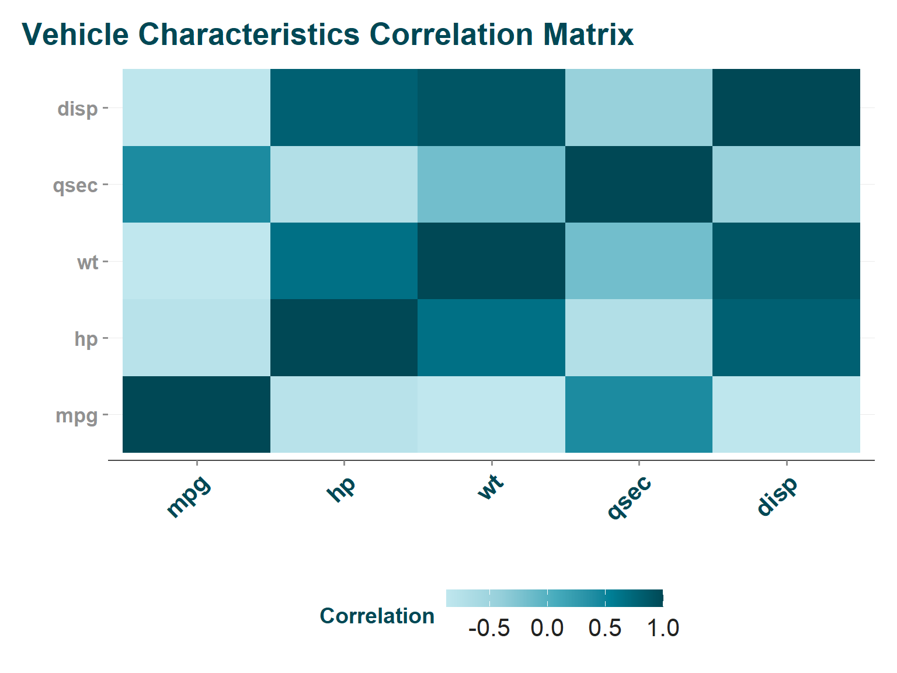
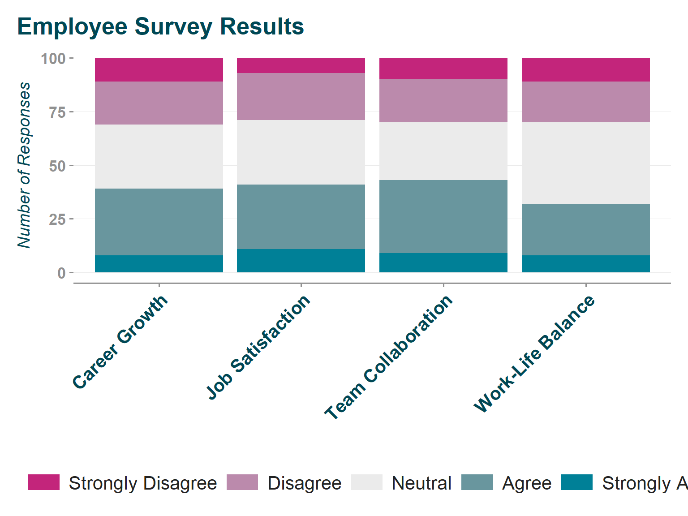
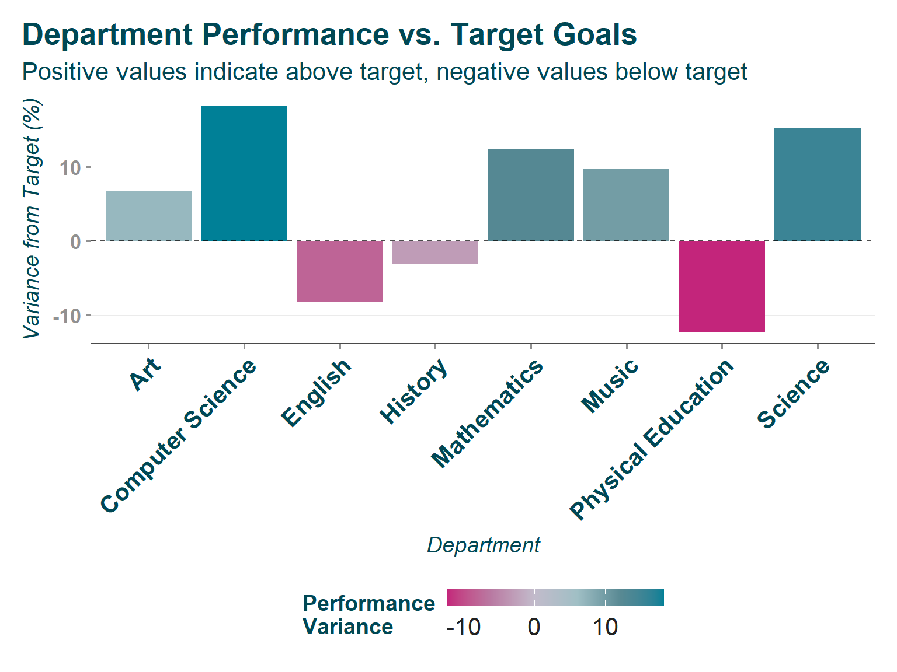

CPAL’s comprehensive color system for data visualization
Why Color Matters in Data Visualization
Color is one of the most powerful tools in data visualization, but it’s also one of the most commonly misused. Poor color choices can mislead your audience, make data inaccessible to colorblind users, or simply make your visualizations look unprofessional.
The cpaltemplates color system solves these problems by providing:
Brand consistency: All colors align with CPAL’s visual identity
Accessibility built-in: All palettes are tested for colorblind accessibility
Data-type appropriate: Different palettes optimized for different kinds of data
Professional quality: Colors chosen by design professionals, not left to chance
When Colors Go Wrong
Common Problem
Why It Happens
CPAL Solution
Categories look ranked
Using sequential colors for unordered categories
Categorical palettes with distinct, unordered colors
Can’t see differences
Colors too similar or poor contrast
High-contrast palettes tested for visibility
Colorblind users excluded
No testing for color vision deficiency
All palettes verified for colorblind accessibility
Inconsistent branding
Random color choices across projects
Standardized brand color system
Data misinterpreted
Wrong palette type for data structure
Clear guidance on palette selection
CPAL Color System Overview
The cpaltemplates package provides 23 distinct color palettes organized into 4 main categories, each designed for specific types of data and use cases:
Category
Palettes Available
Purpose
When to Use
Brand Colors
2 palettes
Core CPAL colors
Individual color needs, brand elements
Categorical
8 palettes
Unordered categories
Groups, categories, classifications
Sequential
6 palettes
Continuous data
Quantities, ranks, progressions
Diverging
3 palettes
Data with meaningful center
Changes from baseline, comparisons
The Science Behind the Choices
Why these specific colors? CPAL’s color palettes are built on color theory principles:
Perceptual uniformity: Equal visual steps between colors represent equal data steps
Cultural considerations: Colors chosen to avoid cultural biases or negative associations
Technical requirements: Colors work across digital displays, print, and projection
Accessibility standards: Meet WCAG guidelines for color contrast and colorblind visibility
Core Functions Overview
cpaltemplates provides 7 main color functions that work together to give you complete control over CPAL’s color system:
Function
Purpose
Returns
Primary Use
cpal_colors()
Get specific colors or palettes
Vector of hex codes
Building custom visualizations
scale_color_cpal()
Apply CPAL colors to ggplot2 color aesthetic
ggplot2 scale object
Automatic ggplot2 integration
scale_fill_cpal()
Apply CPAL colors to ggplot2 fill aesthetic
ggplot2 scale object
Automatic ggplot2 integration
view_cpal_palettes()
Display all or specific palettes with options
Visual display
Choosing and exploring palettes
quick_palette()
Simple palette preview
Visual display
Quick palette reference
list_cpal_palettes()
List available palettes with details
Character vector or list
Programmatic palette discovery
Brand Colors: CPAL’s Core Identity
Primary Colors
When to use: Individual color needs, accent colors, brand elements in visualizations.
CPAL’s primary color palette: - Midnight (#004855): CPAL’s main brand color, deep and authoritative, used throughout the organization - Teal (#008097): CPAL’s signature color, professional and trustworthy - Pink (#C3257B): Energy and passion, used for highlights and callouts - Orange (#ED683F): Warmth and engagement, great for calls-to-action - Gold (#AB8C01): Premium feel, used for emphasis and key findings
Extended Colors
When to use: When you need more color options than the primary set, but still want brand consistency.
# Get the full extended palettecpal_colors("extended")
What’s included: The extended palette includes primary colors plus additional shades and complementary colors that maintain brand consistency while providing more variety for complex visualizations.
Practical applications: - Complex charts with many categories - Dashboard elements that need varied but consistent colors
- Supporting visual elements that shouldn’t compete with primary colors
Categorical Palettes: For Groups and Classifications
The challenge with categorical data: Categories have no inherent order, so colors shouldn’t imply ranking or progression. Traditional rainbow palettes often create false hierarchies.
CPAL’s solution: Carefully selected colors that are visually distinct but don’t suggest any ordering.
Main Categorical Palette
When to use: Most categorical visualizations with 2-5 categories.
# The most commonly used categorical palettecpal_colors("main")# Use in ggplot2ggplot(data, aes(x = variable, fill = category)) +geom_col() +scale_fill_cpal(palette ="main")
What makes this palette special: - 5 distinct colors that work well together - No implied ordering - each color has equal visual weight - High contrast ensures categories are easily distinguishable - Colorblind safe - maintains distinctness for all color vision types
Extended Categorical Options
# For fewer categories, use optimized subsetscpal_colors("main_3") # Perfect for 3-category datacpal_colors("main_4") # Optimal for 4-category data# For special casescpal_colors("main_gray") # Includes neutral gray for "other/none" categorycpal_colors("blues") # Two-color palette for binary comparisonscpal_colors("compare") # Optimized for before/after comparisons
Choosing the right categorical palette:
Your Data
Recommended Palette
Why
2-3 categories
"main_3"
Optimal color spacing, maximum distinction
4 categories
"main_4"
Balanced set without visual overload
5+ categories
"main"
Full palette, but consider simplifying data
Binary comparison
"compare"
High contrast, clear opposition
Has “other/none” category
"main_gray"
Gray appropriately de-emphasizes
Common Categorical Color Mistakes to Avoid
❌ Don’t do this:
# Using sequential colors for categories (implies false order)scale_fill_gradient(low ="lightblue", high ="darkblue")
✅ Do this instead:
# Use categorical colors that don't imply orderscale_fill_cpal(palette ="main")
Sequential Palettes: For Continuous Data
The principle: Sequential data goes from low to high, and colors should visually represent this progression. Light-to-dark or single-hue progressions work best.
When to use sequential palettes: - Population counts, ages, income levels - Percentages, probabilities, rates
- Any continuous measure without a meaningful center point - Heatmaps, choropleths, and intensity visualizations
Single-Hue Sequential (Teal)
Best for: Most continuous data visualization needs.
# Different lengths for different needs#cpal_colors("teal_seq_4") # 4 color steps#cpal_colors("teal_seq_5") # 5 color steps #cpal_colors("teal_seq_6") # 6 color steps# Create example data for heatmap demonstrationlibrary(ggplot2)library(cpaltemplates)# Generate a correlation matrix from mtcars datasetcorrelation_data <-cor(mtcars[, c("mpg", "hp", "wt", "qsec", "disp")])# Convert correlation matrix to long format for ggplot2heatmap_data <-expand.grid(x =rownames(correlation_data),y =colnames(correlation_data))heatmap_data$correlation <-as.vector(correlation_data)# Use in ggplot2 with real dataggplot(heatmap_data, aes(x = x, y = y, fill = correlation)) +geom_tile() +scale_fill_cpal(palette ="teal_seq_5", discrete =FALSE) +labs(title ="Vehicle Characteristics Correlation Matrix",x ="",y ="",fill ="Correlation" ) +theme_cpal() +theme(axis.text.x =element_text(angle =45, hjust =1))

Why teal for sequential? - Brand consistency: Uses CPAL’s signature color - Perceptual uniformity: Even visual steps represent equal data steps - Print friendly: Works well in both color and grayscale - Professional appearance: Sophisticated, not overwhelming
Multi-Hue Sequential (Yellow-Teal)
Best for: When you want more visual interest or need to distinguish between multiple sequential variables.
When to choose multi-hue over single-hue: - Multiple related measures: Comparing different rates or counts - High visual impact needed: Presentations, dashboards, key findings - Complex visualizations: Where single-hue might be too subtle - Avoiding confusion: When other elements use teal
Color progression explanation: - Yellow (#E5CB50): Represents low values, warm and approachable - Green-Teal transition: Middle values, natural progression
- Dark Teal (#004855): High values, professional and serious
Choosing Sequential Palette Length
Number of Colors
Best For
Example Use Cases
4 colors
Simple continuous data, clear distinctions
Quartiles, basic heatmaps, simple choropleths
5 colors
Most common choice, balanced detail
Quintiles, most continuous visualizations
6 colors
Complex data needing fine distinctions
Detailed heatmaps, precise geographic data
Diverging Palettes: For Data with a Meaningful Center
The concept: Some data has a natural center point where values above and below have different meanings. Diverging palettes use contrasting colors on each side of this center.
Classic use cases: - Change from baseline: Profit/loss, above/below average, improvement/decline - Survey data: Agree/disagree, satisfaction scales, political leaning - Statistical data: Positive/negative correlations, z-scores, residuals - Geographic data: Temperature anomalies, election margins
Pink-Teal Diverging
Why this combination? Pink and teal are complementary colors that create maximum visual contrast while maintaining CPAL brand consistency.
# Different granularity optionscpal_colors("pink_teal_3") # Simple: negative, neutral, positivecpal_colors("pink_teal_5") # Moderate: adds nuancecpal_colors("pink_teal_6") # Detailed: maximum distinction
Color psychology in the diverging palette: - Pink side: Often represents “negative” changes, but the color choice is intentionally less harsh than red - Gray center: Neutral, no change, baseline values - Teal side: “Positive” changes, using CPAL’s signature optimistic color
Practical Applications
Example 1: Survey Results
# Likert scale data (Strongly Disagree to Strongly Agree)library(ggplot2)library(cpaltemplates)# Create realistic survey dataset.seed(123) # For reproducible examplesurvey_data <-data.frame(question =rep(c("Job Satisfaction", "Work-Life Balance", "Team Collaboration", "Career Growth"), each =100),response =sample(c("Strongly Disagree", "Disagree", "Neutral", "Agree", "Strongly Agree"),400,replace =TRUE,prob =c(0.1, 0.2, 0.3, 0.3, 0.1) # Realistic distribution ))# Ensure proper factor ordering for Likert responsessurvey_data$response <-factor(survey_data$response, levels =c("Strongly Disagree", "Disagree", "Neutral", "Agree", "Strongly Agree"))# Create the plotggplot(survey_data, aes(x = question, fill = response)) +geom_bar(position ="stack") +scale_fill_cpal(palette ="pink_teal_5") +theme_cpal() +labs(title ="Employee Survey Results",x ="",y ="Number of Responses",fill ="" ) +theme(axis.text.x =element_text(angle =45, hjust =1))

Example 2: Performance vs. Target
# Performance above/below targetlibrary(ggplot2)library(cpaltemplates)# Create realistic performance data for different departmentsset.seed(456) # For reproducible exampleperformance_data <-data.frame(department =c("Mathematics", "English", "Science", "History", "Art", "Physical Education", "Music", "Computer Science"),variance_from_target =c(12.5, -8.2, 15.3, -3.1, 6.7, -12.4, 9.8, 18.2))# Alternative: could use random data that's more variable# performance_data$variance_from_target <- runif(8, min = -20, max = 25)# Create the plotggplot(performance_data, aes(x = department, y = variance_from_target, fill = variance_from_target)) +geom_col() +scale_fill_cpal(palette ="pink_teal_6", discrete =FALSE) +theme_cpal() +labs(title ="Department Performance vs. Target Goals",subtitle ="Positive values indicate above target, negative values below target",x ="Department",y ="Variance from Target (%)",fill ="Performance\nVariance" ) +theme(axis.text.x =element_text(angle =45, hjust =1)) +geom_hline(yintercept =0, linetype ="dashed", color ="black", alpha =0.7)

Critical Design Decisions
Center point matters: Make sure your data actually has a meaningful center. If not, use sequential palettes instead.
❌ Don’t use diverging for: - Age groups (no meaningful center) - Income levels (zero isn’t meaningful for most analyses) - Geographic regions (no inherent center)
✅ Do use diverging for: - Change scores (zero = no change) - Performance vs. benchmarks (benchmark = center) - Balance measures (balanced = center)
Advanced Usage and Customization
Exploring Available Palettes
The cpaltemplates package provides three complementary functions for palette exploration:
list_cpal_palettes() - Programmatic palette discovery - Returns palette names for use in code - Optional detailed information with descriptions and color counts - Perfect for building automated palette selection logic
quick_palette() - Fast visual reference
- Clean, simple display for quick reference - Optional color limiting for preview of large palettes - Ideal when you know the palette name and want a quick look
view_cpal_palettes() - Comprehensive exploration - All palettes overview or specific palette deep dive - Customizable display options (hex codes, compact view, etc.) - Best for choosing between multiple palettes or detailed exploration
Getting Specific Colors
# Get individual colors by namecpal_colors(c("teal", "pink", "orange"))# Get first N colors from any palettecpal_colors("main", n =3)# Reverse any palettecpal_colors("main", reverse =TRUE)
Integration with ggplot2
For discrete data:
# Automatic color selection based on your datascale_color_cpal(palette ="main")scale_fill_cpal(palette ="main")
For continuous data:
# Set discrete = FALSE for continuous scalesscale_color_cpal(palette ="teal_seq_5", discrete =FALSE)scale_fill_cpal(palette ="pink_teal_5", discrete =FALSE)
Advanced ggplot2 options:
# Reverse palette directionscale_fill_cpal(palette ="main", reverse =TRUE)# Pass additional arguments to underlying ggplot2 scalesscale_color_cpal(palette ="main", name ="Categories", guide =guide_legend(ncol =2))
Exploring and Choosing Palettes
Visual exploration:
# See all palettes at onceview_cpal_palettes()# Interactive exploration of individual palettesquick_palette()# Display specific palette with hex codesquick_palette("main")quick_palette("teal_seq_5")
What each function shows: - view_cpal_palettes(): Grid layout showing every palette, perfect for comparison - quick_palette(): Interactive tool with color codes and accessibility information - view_cpal_palettes(): Clean display with hex codes, ideal for documentation
Best Practices and Guidelines
Color Selection Decision Tree
Step 1: What type of data do you have?
graph TD A[What type of data?] --> B[Categorical<br/>Groups, categories, classifications] A --> C[Sequential<br/>Continuous, low to high] A --> D[Diverging<br/>Has meaningful center point] B --> E[How many categories?] E --> F[2-3: main_3] E --> G[4: main_4] E --> H[5+: main] C --> I[Visual impact needed?] I --> J[Standard: teal_seq_5] I --> K[High impact: yellow_teal_seq_5] D --> L[Level of detail?] L --> M[Simple: pink_teal_3] L --> N[Detailed: pink_teal_5 or pink_teal_6]
Figure 1: CPAL Color Palette Decision Tree
Accessibility Considerations
All CPAL palettes are designed to be accessible, but here are best practices:
Test your visualizations with colorblind simulation tools
Don’t rely only on color to convey information - use shapes, patterns, or labels too
Provide legends and clear labeling for all color-coded elements
Consider your audience - some contexts may need higher contrast
Common Use Cases and Recommendations
Visualization Type
Recommended Palette
Why
Bar/column charts
"main" for categories, "teal_seq_5" for values
Clear categorical distinction or value progression
Line charts
"main" for multiple lines
Distinct line identification
Scatter plots
"main" for groups, "teal_seq_5" for density
Group identification or density visualization
Heatmaps
"teal_seq_5" or "yellow_teal_seq_5"
Clear intensity progression
Geographic maps
"teal_seq_5" for quantities, "pink_teal_5" for comparisons
Geographic data best practices
Dashboards
Mix of "main" and "teal_seq_5"
Consistent brand presence
Performance and Technical Considerations
Color rendering: All CPAL colors are specified in hex format for consistency across platforms and outputs.
File size: Color complexity doesn’t significantly impact file sizes, so choose based on visual needs rather than technical constraints.
Print considerations: All palettes are tested for print reproduction, but sequential palettes generally print more reliably than complex categorical ones.
Troubleshooting Common Issues
Colors Not Appearing
# Check if colors are loading properlycpal_colors("main") # Should return hex codes# If empty, try refreshinglibrary(cpaltemplates)
Colors Look Different Than Expected
Possible causes: - Display calibration: Colors appear different on different monitors - RStudio viewer: Colors may render differently in RStudio vs. exported files - File format: PNG vs. PDF may show slight color differences
# Automatically adjust to your data lengthcpal_colors("main", n =7) # Gets 7 colors even if palette has 5# Or choose appropriate palette lengthcpal_colors("teal_seq_6") # For 6-level data
Examples and Implementation
Complete Workflow Example
library(cpaltemplates)library(ggplot2)# Step 1: Explore available colorsview_cpal_palettes()# Step 2: Choose appropriate palette for your data typemy_data <-data.frame(category =c("A", "B", "C", "D"),value =c(25, 40, 35, 20))# Step 3: Create visualization with CPAL colorsp <-ggplot(my_data, aes(x = category, y = value, fill = category)) +geom_col() +scale_fill_cpal(palette ="main_4") +# 4 categories = main_4theme_cpal() +labs(title ="Sample Categorical Data",subtitle ="Using CPAL's main_4 categorical palette" )# Step 4: Save with CPAL standardssave_cpal_plot(p, "my_visualization.png")
The CPAL color system provides the foundation for all effective data visualization. Choose palettes based on your data type, consider your audience’s needs, and always prioritize accessibility and clarity over visual complexity.